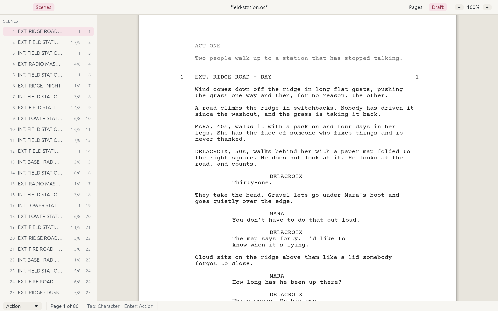
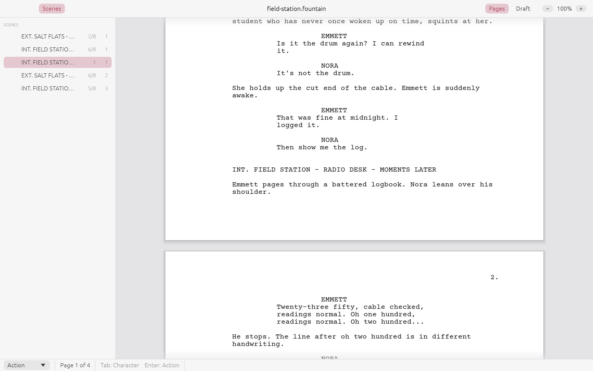
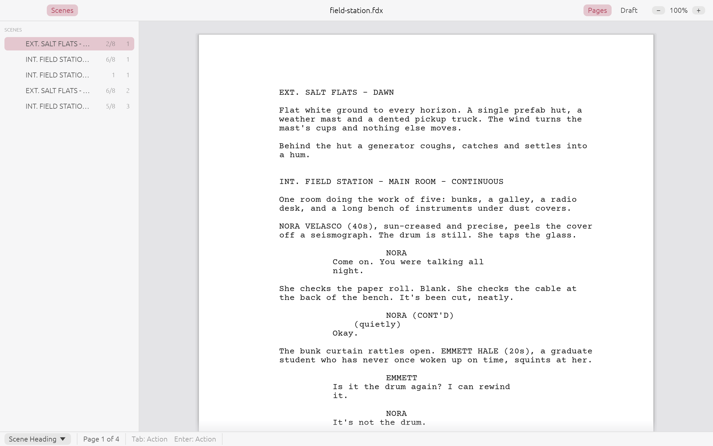
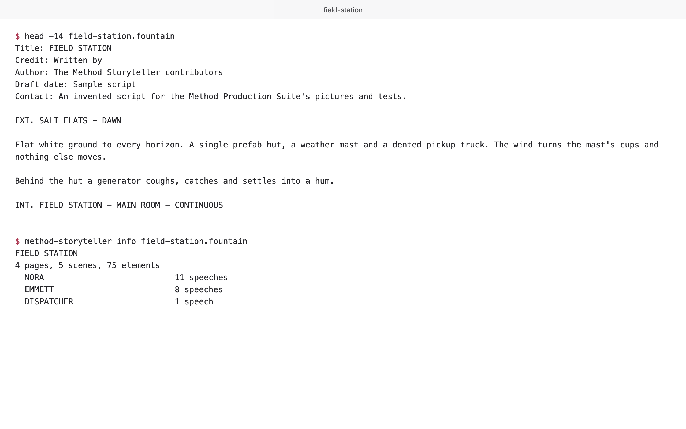

Early alpha Version 0.3.0, for Mac (Apple silicon and Intel); Windows and Linux built, not yet tested by a person.
Write the script. The formatting takes care of itself.
A free, open-source screenwriting app. Tab and Enter move between scene heading, action, character, parenthetical and dialogue the way screenwriters expect, the pages break the industry way, and your script is an open file on your own computer.
No account, no subscription, and it works offline.
Field Station, an invented script, opens the first time; Help > Open Sample Script brings it back.


A look around






Features
What it does today
All of this is built and in the code. Open a group to see what is in it; the dashed box at the end is what comes next.
Writing 6
- Tab and Enter Enter ends an element and starts the next one; Tab changes an empty element's type or starts a parenthetical after a cue. The status bar always says what each will do.
- The element picker Enter on an empty line opens a short list: a letter or the arrows choose scene heading, action, character and the rest.
- Shortcuts ⌘1 to ⌘7 start an element of that type; ⌘⌥1 to ⌘⌥7 change the current one (Ctrl and Ctrl+Shift on Windows and Linux).
- Autocomplete Character names, locations and times of day as you type, and the next speaker guessed in a conversation.
- Automatic CONT'D A character who speaks again in the same scene gets (CONT'D) at layout time, never typed into the script.
- Smart quotes Curly quotes and apostrophes as you type, left alone in headings and cues.
Pages 6
- Industry pagination Courier Prime 12 pt, standard margins, 54 lines a page, (MORE) and (CONT'D) where a speech breaks, and a scene heading never stranded at the foot of a page.
- Checked against produced scripts On a set of 15 produced scripts, every scene starts on the same page as in the printed original.
- Page view and draft view Separate pages as they print, or one continuous column for writing.
- PDF export With the title page, and Courier Prime embedded.
- Title page and scene numbers A title page dialog, and scene numbers shown in the editor and the PDF.
- Scene lengths Each scene's length in eighths of a page beside its page in the scene list, and written into exported .fdx files for scheduling.
Files and automation 4
- Open formats, your choice Open Screenplay Format for new scripts, or Fountain; File > Save New Scripts as… sets which.
- .fdx Opened and saved, keeping everything Method Storyteller does not use itself.
- A command line
method-storytellerconverts, paginates, exports PDF and runs any command on a script file. - Scriptable Every action is a named command, and a JSON-lines control channel drives the app or a headless engine.
Coming next
- Go To a scene number or a page.
- Find and replace with one Undo for Replace All.
- Rename a character in every cue at once.
- Spell check as you type.
- Script notes on a line or a passage.
- Production tools revisions, locked pages and reports.
Works with what you have
Bring your scripts with you
Open Screenplay Format
The standard for new scripts: structured XML that keeps production detail.
- .osf Open and save, also inside a ZIP archive
Fountain
Plain text in an open format that any text editor reads.
- .fountain Open and save
Other files
For sharing and printing.
- .fdx Open and save
- .pdf Export
.fdx is the file format Final Draft uses. Method Storyteller is not affiliated with its makers.
Yours to keep
Your script is a file you own
- Open formats. New scripts are Open Screenplay Format, structured XML that any program can read. Prefer plain text? Fountain opens in any text editor, now and in twenty years, and sits happily in version control.
- Your script never leaves your computer. No account, no cloud, and the app works offline. It goes online only to check for its own updates, and you can turn that off.
- Free and open source. MIT or Apache-2.0, at your option.
<!-- a scene, as it sits in an .osf file -->
<para><style basestylename="Scene Heading"/>
<text>INT. FIELD STATION - MAIN ROOM - NIGHT</text></para>
<para><style basestylename="Action"/>
<text>Nora sits at the bench with the seismograph.</text></para>
<para><style basestylename="Character"/><text>NORA</text></para>
<para><style basestylename="Dialogue"/><text>Okay.</text></para>Build it yourself
Run it from source
Prefer to build it? With Rust installed, the app builds and runs on macOS, Windows and Linux.
$ git clone https://github.com/method-production-suite/method-storyteller
$ cd method-storyteller
$ cargo run --release -p method-storyteller -- examples/field-station.osfThe README has the details and the keyboard reference. Found a bug? Tell us.